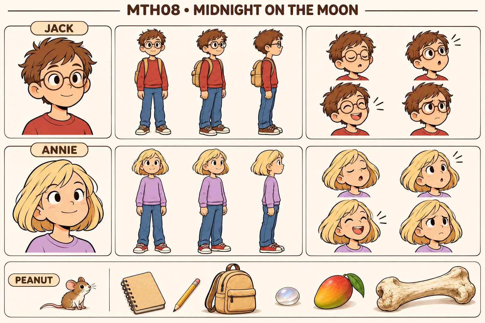

Midnight on the Moon · Characters
목차 · 장별 제작 기준


공통 얼굴 참조 시트입니다. 8권 의상은 원문에 따라 별도로 적용합니다.
Book 8 source-first continuity plan
Book4 faces and proportions are the primary visual reference. Jack: glasses, brown hair, sweatshirt and jeans. Annie: blonde bob, sweatshirt and JEANS as explicitly stated in chapter1; no denim shorts. Colors are series design choices. Peanut is a tiny brown-white mouse. Moon man is a huge suited figure with hidden face and refrigerator-size jetpack; no invented alien face. Moon rabbits is a jumping metaphor, never literal rabbits. Spacesuit colors and controls require chapter2-3 source review before generation. Moonstone, mango, mammoth bone and map each have source-timed ownership. Morgan reveal must occur only in its source chapter. Earth midnight silver moonlight differs from black lunar sky, gray regolith and blue-white Earth. No wind or floating atmospheric dust on lunar surface.
Every batch: read chapter page and visual sheets, plan state changes, save exact prompt, generate 4x4, detect actual gutters, inspect overlay and every cropped tile, fix errors before integration.